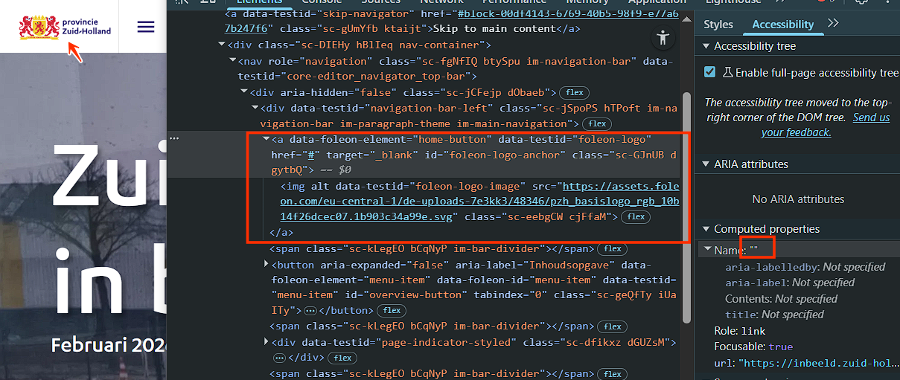
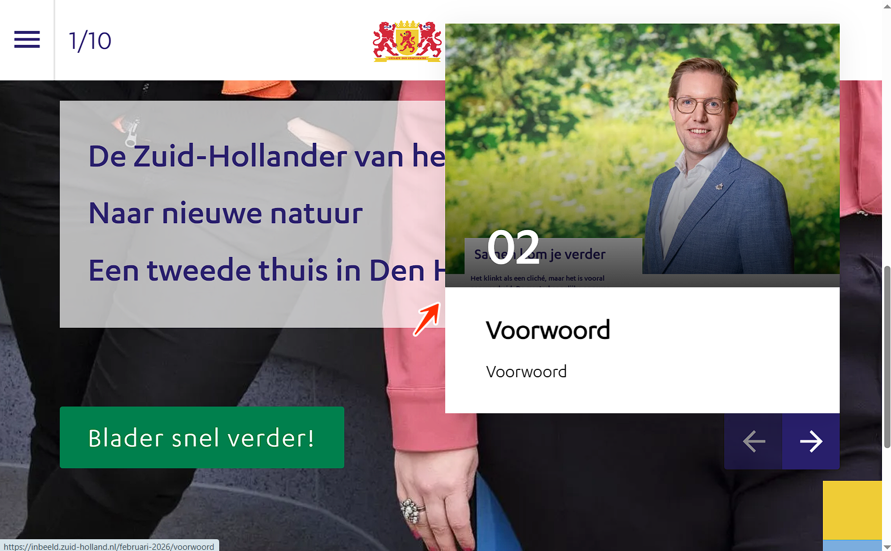
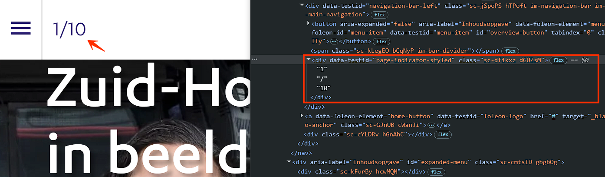

Onderstaande bevindingen gelden voor alle pagina's op de website inbeeld.zuid-holland.nl.
#1 - Logo heeft geen tekstalternatief

Bovenaan de website staat een logo dat functioneert als een link zonder tekstalternatief. Het alt-attribuut is leeg.
Logo's zijn informatieve afbeeldingen en hebben een tekstalternatief (alt-tekst) nodig. De alt-tekst moet de volledige tekst bevatten die in het logo wordt weergegeven. Zo weten bezoekers die de afbeelding niet kunnen zien toch wat erop staat.
Deze bevinding raakt ook succescriterium 4.1.2, omdat de link geen toegankelijke naam heeft; succescriterium 2.4.4, omdat het doel van de link niet duidelijk is; en succescriterium 2.5.3, omdat de toegankelijke naam van de link niet overeenkomt met de zichtbare tekst in het logo. Hierdoor kan de link niet correct met spraakbesturing worden geactiveerd: bezoekers spreken de zichtbare tekst uit, terwijl de toegankelijke naam iets anders is.
User story
Als bezoeker die de pagina beluistert met een schermlezer, die de pagina leest met afbeeldingen uitgeschakeld, of die op het logo vertrouwt om te zien of ik op de juiste site ben, heb ik nodig dat het logo bovenaan de pagina een
alt-tekst heeft met alle zichtbare tekst uit het logo — want zonder die alt-tekst zegt mijn schermlezer óf helemaal niets óf alleen "afbeelding", kan ik niet vaststellen van welke organisatie deze pagina is, en raak ik (als het logo ook een link naar de home is) het belangrijkste navigatieanker op de site kwijt.
Oplossing
Voeg een tekstalternatief toe aan deze afbeelding.
#2 - Een deel van de content staat in een andere taal, maar er is geen taalcode toegepast
De skiplink "Skip to main content" staat in het Engels zonder taalcode, terwijl de website in het Nederlands is. Hierdoor passen schermlezers de uitspraakregels van de hoofdtaal toe, waardoor anderstalige tekst verkeerd wordt uitgesproken.
Hetzelfde geldt voor een knop om naar beneden te scrollen.
User story
Als bezoeker die de pagina leest met een schermlezer, heb ik nodig dat elke zin die in een andere taal dan de hoofdtaal van de pagina is geschreven, in een eigen
lang-attribuut wordt verpakt — want nu staat er een Engelse zin in een Nederlandse pagina zonder taalwissel, leest mijn schermlezer die voor met Nederlandse uitspraakregels en wordt het resultaat onverstaanbaar.
Oplossing
Voeg voor een correcte uitspraak een lang-attribuut met de juiste taalcode toe aan het element dat de anderstalige tekst bevat. Bijvoorbeeld: staat de tekst in het Engels, voeg dan lang="en" toe aan het element.
#3 - Content bij hover of focus kan niet worden gesloten

Onderaan elke pagina staan links met pijliconen om tussen pagina's te navigeren. Bij hover of focus op deze pijllinks verschijnt extra content. Op een klein scherm overlapt deze extra content de tekst op de pagina, zoals "Een tweede thuis in Den Haag Zuidwest", en kan niet worden gesloten zonder de muisaanwijzer of focus weg te bewegen van de trigger.
Gebruikers die een schermvergroter gebruiken, zien dat de extra content de onderliggende pagina-inhoud afdekt. Zonder een manier om de overlay te sluiten — bijvoorbeeld met Escape — blijft de afgedekte content onbereikbaar. WCAG vereist dat content die verschijnt bij hover of focus, te sluiten moet zijn.
User story
Als bezoeker die met het toetsenbord navigeert, een schermvergroter gebruikt of een beperkte motoriek heeft, heb ik nodig dat elke popup die verschijnt bij hover of focus te sluiten is — met de Escape-toets of via een duidelijke sluitknop — zonder dat ik mijn aanwijzer of focus van de trigger af hoef te halen — want nu dekt de popup een deel van de pagina af dat ik juist wil zien, is de enige manier om hem weg te krijgen het verplaatsen van de focus (waardoor ik mijn plek kwijtraak), en blijft een vergrotergebruiker achter met een popup die het scherm permanent blokkeert.
Oplossing
Zorg dat de extra content gesloten kan worden zonder dat de aanwijzer of focus verplaatst hoeft te worden, bijvoorbeeld door op Escape te drukken.
#4 - Het aantal pagina's wordt niet uitgesproken door de schermlezer

Op kleine schermen staat tekst die het totaal aantal pagina's en de huidige pagina aangeeft (bijvoorbeeld "2/10"). Als de pagina verandert, wordt deze informatie visueel bijgewerkt, maar niet aangekondigd door schermlezers. Deze informatie is een statusbericht: het informeert de gebruiker over de huidige staat (de actieve pagina) zonder dat daar focus voor nodig is. De informatie is echter niet programmatisch als statusbericht aangeboden, waardoor hulptechnologieën de update niet automatisch aankondigen.
Op grotere schermen wordt vergelijkbare informatie wél aangekondigd als onderdeel van de navigatie. Op kleine schermen is dit gedrag niet consistent.
User story
Als bezoeker die op een klein scherm een schermlezer gebruikt, heb ik nodig dat de informatie over het totaal aantal pagina's en de huidige pagina automatisch wordt aangekondigd als ik tussen pagina's navigeer — bijvoorbeeld met
aria-live="polite"ofrole="status"— want het paginanummer verandert visueel zonder dat de pagina opnieuw laadt, mijn schermlezer meldt die verandering niet, en daardoor kan ik niet horen op welke pagina ik ben of hoeveel pagina's er zijn.
Oplossing
Door aria-live toe te voegen aan het element met de tekst "2/10" of "pagina 2 van 10" zorg je dat schermlezers de verandering aankondigen.
#5 - Zichtbare linktekst ontbreekt in de toegankelijke naam
Op alle pagina's behalve "Welkom" staat in de footer een link met de zichtbare tekst "Contact" die niet in de toegankelijke naam is opgenomen ("Open zuid-holland.nl in een nieuw tabblad"). Die toegankelijke naam wordt via een aria-label gezet. Door deze mismatch kan de link niet met spraakbesturing worden geactiveerd. Als de zichtbare tekst afwijkt van de toegankelijke naam, werken spraakcommando's op basis van de zichtbare tekst niet.
User story
Als bezoeker die de pagina met spraak bedient, heb ik nodig dat de toegankelijke naam van elke link de woorden bevat die ik op het scherm zie — ook links die om een afbeelding heen zijn gebouwd. Als de toegankelijke naam op de link of de bijbehorende afbeelding die woorden niet bevat, kan mijn spraakcommando de link niet volgen.
Oplossing
Om spraakbesturing werkend te houden, neem je de zichtbare tekst op in de toegankelijke naam, bij voorkeur aan het begin. In dit geval: pas het aria-label aan zodat de zichtbare tekst erin staat (bijvoorbeeld aria-label="Contact - Open in een nieuw tabblad").